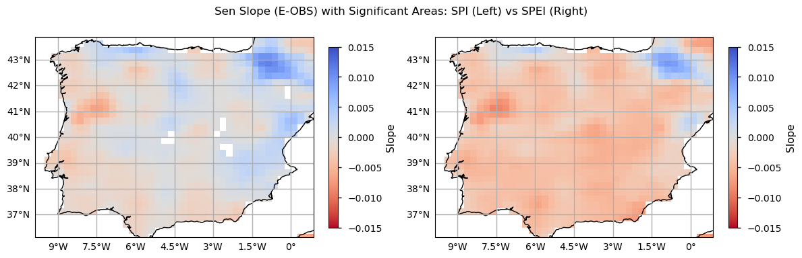

2.1. In-situ precipitation assessment for drought monitoring#
Production date: 21/10/2024
Produced by: Ana Oliveira and João Paixão (CoLAB +ATLANTIC)
🌍 Use case: Adaptation to Climate Extremes.#
❓ Quality assessment question#
User Question: How well can we disclose which regions are the most exposed to droughts? What are the observed changes?
In this Use Case, we will access the E-OBS daily gridded meteorological data for Europe from 1950 to present derived from in-situ observations (henceforth, E-OBS) data from the Climate Data Store (CDS) of the Copernicus Climate Change Service (C3S) and analyse the E-OBS precipitation (RR) drought extremes, over a given Area of Interest (AoI), as a regional example of using E-OBS in the scope of the European State of Climate [1]. The analysis includes drought indicators as defined by the World Meteorological Organization’s Expert Team on Sector-Specific Climate Indices (ET-SCI) in conjunction with sector experts [2] [3]:
(i) Standardized Precipitation Index (SPI);
(ii) Standardized Precipitation Evapotranspiration Index (SPEI);
(iii) the corresponding maps, to disclose where drought extremes are changing the most.
📢 Quality assessment statement#
These are the key outcomes of this assessment
The E-OBS dataset offers a consistent and complete set of gridded meteorological observations over Europe suitable for analysing climate change and extremes, including for precipitation monitoring. [4]
Its reliance on observation data indicates a more sensitive depiction of extreme values, being fit for drought monitoring. For example, according to [5] both E-OBS and ERA5 demonstrate accuracy in capturing precipitation patterns, with E-OBS showing good agreement in regions with dense station networks. The authors also concluded that E-OBS can capture extreme values of precipitation in areas with high data density but may smooth out extreme events in data-sparse regions.
E-OBS has also been prove as useful in monitoring drought conditions over the Iberian Peninsula, showing similar results to those reported in the literature over this region, using other observational gridded data [7]. Indeed, SPEI showcases more significant and pronounced trends over the region, and increased sensitivity in drought detection. Furthermore, results agree with the notion that the Iberian Peninsula is a hotspot for climate change impacts related to drought.
In an another example, [6] evaluated the effectiveness of the E-OBS dataset for drought monitoring in Greek wine production areas from 1981 to 2012. E-OBS excelled in reproducing annual decreasing precipitation trends across spring, summer, and autumn, and accurately captured monthly variability, especially in the spring and summer. It demonstrated lower error rates compared to other datasets and performed well in various statistical evaluations, including better simulation of wet and dry day probabilities and extreme precipitation indices. For drought monitoring specifically, E-OBS proved superior when using the Standardized Precipitation Index (SPI).

📋 Methodology#
1. Define the AoI, search and download E-OBS
2. Calculate Standardized Precipitation Index (SPI)
3. Calculate Standardized Precipitation Evapotranspiration Index (SPEI)
4. Comparing SPI and SPEI Climatologies
5. Calculate Linear Trends
6. Main Takeaways
📈 Analysis and results#
1. Define the AoI, search and download E-OBS#
Import all the libraries/packages#
We will be working with data in NetCDF format. To best handle this data we will use libraries for working with multidimensional arrays, in particular Xarray. We will also need libraries for plotting and viewing data, in this case we will use Matplotlib and Cartopy.
Data Overview#
To search for data, visit the CDS website: http://cds.climate.copernicus.eu Here you can search for ‘in-situ observations’ using the search bar. The data we need for this tutorial is the E-OBS daily gridded meteorological data for Europe from 1950 to present derived from in-situ observations. This catalogue entry provides a daily gridded dataset of historical meteorological observations, covering Europe (land-only), from 1950 to the present. This data is derived from in-situ meteorological stations, made available through the European Climate Assessment & Dataset (ECA&D) project, as provided by National Meteorological and Hydrological Services (NMHSs) and other data-holding institutes.
E-OBS comprises a set of spatially continuous Essential Climate Variables (ECVs) from the Surface Atmosphere, following the Global Climate Observing System (GCOS) convention, provided as the mean and spread of the spatial prediction ensemble algorithm, at regular latitude-longitude grid intervals (at a 0.1° and 0.25° spatial resolution), and covering a long time-period, from 1 January 1950 to present-day. In addition to the land surface elevation, E-OBS includes daily air temperature (mean, maximum and minimum), precipitation amount, wind speed, sea-level pressure and shortwave downwelling radiation.
The E-OBS version used for this Use Case, E-OBSv28.0e, was released in October 2023 and its main difference from the previous E-OBSv27.0e is the inclusion of new series and some corrections for precipitation stations.
Having selected the correct dataset, we now need to specify what product type, variables, temporal and geographic coverage we are interested in. In this Use Case, the ensemble mean of precipitation (RR) will be used, considering the last version available (v28.0e). These can all be selected in the “Download data” tab from the CDS. In this tab a form appears in which we will select the following parameters to download, for example:
Product Type: Ensemble mean
Variable: daily precipitation sum, and mean temperature
Grid resolution: 0.25
Period: Full period
Version: 28.0e
Format: Zip file (.zip)
At the end of the download form, select Show API request. This will reveal a block of code, which you can simply copy and paste into a cell of your Jupyter Notebook …
Download data
… having copied the API request to a Jupyter Notebook cell, running it will retrieve and download the data you requested into your local directory. However, before you run it, the terms and conditions of this particular dataset need to have been accepted directly at the CDS website. The option to view and accept these conditions is given at the end of the download form, just above the Show API request option. In addition, it is also useful to define the time period and AoI parameters and edit the request accordingly, as exemplified in the cells below.
1.1. Download and prepare E-OBS data#
0%| | 0/1 [00:00<?, ?it/s]2025-03-12 12:20:48,030 INFO [2024-09-26T00:00:00] Watch our [Forum](https://forum.ecmwf.int/) for Announcements, news and other discussed topics.
2025-03-12 12:20:48,031 WARNING [2024-06-16T00:00:00] CDS API syntax is changed and some keys or parameter names may have also changed. To avoid requests failing, please use the "Show API request code" tool on the dataset Download Form to check you are using the correct syntax for your API request.
2025-03-12 12:20:48,247 INFO [2024-09-26T00:00:00] Watch our [Forum](https://forum.ecmwf.int/) for Announcements, news and other discussed topics.
2025-03-12 12:20:48,248 WARNING [2024-06-16T00:00:00] CDS API syntax is changed and some keys or parameter names may have also changed. To avoid requests failing, please use the "Show API request code" tool on the dataset Download Form to check you are using the correct syntax for your API request.
2025-03-12 12:20:48,632 INFO Request ID is f75f154f-8545-4a20-ba13-a68f5dbe86d2
2025-03-12 12:20:48,726 INFO status has been updated to accepted
2025-03-12 12:20:55,939 INFO status has been updated to running
2025-03-12 12:27:10,129 INFO status has been updated to successful
100%|██████████| 1/1 [06:41<00:00, 401.42s/it]
1.2. Inspect and view data#
Now that we have downloaded the data, we can inspect it. We have requested the data in NetCDF format. This is a commonly used format for array-oriented scientific data. To read and process this data we will make use of the Xarray library. Xarray is an open source project and Python package that makes working with labelled multi-dimensional arrays simple and efficient. We will read the data from our NetCDF file into an xarray.Dataset.
To better understand the E-OBS data structure and check the aggregated Daily Mean Precipitation (RR) and the Daily Mean Temperature (TG), we will first need to retrieve the RR variable from the 2 multidimensional netCDF data structures and calculate the descriptive statistics.
<xarray.Dataset> Size: 292MB
Dimensions: (time: 25933, latitude: 32, longitude: 44)
Coordinates:
* latitude (latitude) float64 256B 36.12 36.38 36.62 ... 43.38 43.62 43.88
* longitude (longitude) float64 352B -9.875 -9.625 -9.375 ... 0.625 0.875
* time (time) datetime64[ns] 207kB 1950-01-01 1950-01-02 ... 2020-12-31
Data variables:
rr (time, latitude, longitude) float32 146MB dask.array<chunksize=(13605, 16, 22), meta=np.ndarray>
tg (time, latitude, longitude) float32 146MB dask.array<chunksize=(13605, 16, 22), meta=np.ndarray>
Attributes:
E-OBS_version: 30.0e
Conventions: CF-1.4
References: http://surfobs.climate.copernicus.eu/dataaccess/access_eo...
history: Fri Aug 30 12:51:50 2024: ncks --no-abc -d time,0,27209 /...
NCO: netCDF Operators version 5.1.8 (Homepage = http://nco.sf....We can see from the data structure that our information is already stored in a four-dimensional array with two data variables, corresponding to the RR ‘mean’ and TG ‘mean’, with dimensions: 25933 days in ‘time’, 32 steps in ‘latitude’, and 44 steps in ‘longitude’. In this case, we are not using the toolbox’s transformer function to calculate the maximum/minimum statistics directly from the daily data. The following 30-year climatological periods are considered, as per the guidelines from the World Meteorological Organization (WMO):
1951 to 1980
1961 to 1990
1971 to 2000
1981 to 2010
1991 to 2020
Let’s inspect the data and compute these descriptive statistics of each period and print them in tabular form.
| period | number | mean | maximum | minimum | st.deviation | |
|---|---|---|---|---|---|---|
| 0 | 1951-1980 | 10892252 | 1.750003 | 135.500000 | 0.0 | 4.383260 |
| 1 | 1961-1990 | 10891258 | 1.710895 | 147.699997 | 0.0 | 4.355820 |
| 2 | 1971-2000 | 10892252 | 1.649149 | 147.699997 | 0.0 | 4.281535 |
| 3 | 1981-2010 | 10891258 | 1.610303 | 147.699997 | 0.0 | 4.284586 |
| 4 | 1991-2020 | 10892252 | 1.619957 | 174.600006 | 0.0 | 4.376774 |
As we can see from the descriptive statistics, the two most recent climatological periods are characterized by mean lower precipitation - in the Iberian Peninsula, the annual daily mean RR between 1991 and 2020 is almost 0.15mm above the equivalent in 1951 to 1980. Nevertheless, when we check the annual daily maximum RR in each period, the most recent period shows a positive deviation of circa 40.0mm. To further explore these findings, let’s compare also TG.
| period | number | mean | maximum | minimum | st.deviation | |
|---|---|---|---|---|---|---|
| 0 | 1951-1980 | 10892252 | 13.030372 | 34.860001 | -21.350000 | 6.920749 |
| 1 | 1961-1990 | 10891258 | 13.167892 | 35.380001 | -19.090000 | 6.949373 |
| 2 | 1971-2000 | 10892252 | 13.348657 | 35.459999 | -19.090000 | 6.910661 |
| 3 | 1981-2010 | 10891258 | 13.785862 | 36.259998 | -19.090000 | 7.055634 |
| 4 | 1991-2020 | 10892252 | 14.076628 | 36.259998 | -17.389999 | 7.108184 |
In the case of daily mean air temperature, the two most recent climatological periods are characterized by higher mean and maximum TG values - in the Iberian Peninsula, the annual daily mean TG between 1991 and 2020 is 1.0°C above the equivalent in 1951 to 1980, while the annual daily maximum increased circa 1.5°C. To further explore these findings, let’s inspect the maps and time series of the data.
To do this, we need to create a set of weights based on latitude values. The weighted method is used to create a weighted dataset. Any subsequent aggregation operations (such as mean, sum, etc.) will take these weights into account. These weights can be used to account for the varying area of grid cells in latitude-longitude grids to ensure that calculations properly account for varying areas represented by grid cells at different latitudes.
Now we will proceed with plotting an example from the last time step of the time series to visualise the spatial level of detail of the data.
We will also plot the spatial weighted average of RR to check for its temporal variability in this area.
These time series plots show that the E-OBS data product has very significative inter-annual variability in the RR values, with very few cases of RR surpassing 20mm. Some years with RR < 5mm are also apparent in the last decades. To move forward with the drought analysis, we will now calculate the two above-mentioned sector-specific drought indicators.
2. Calculate Standardized Precipitation Index (SPI)#
The Standardized Precipitation Index (SPI) is commonly used to describe meteorological drought across various timescales. It correlates closely with soil moisture on shorter scales and with groundwater and reservoir levels on longer scales. The SPI allows for comparisons between different climatic regions by measuring observed precipitation as a standardized variation from a chosen probability distribution function that best fits the precipitation data. Typically, this data is adjusted to fit either a gamma or a Pearson Type III distribution before being converted into a normal distribution. The SPI values represent the number of standard deviations that the observed precipitation anomaly is from the long-term average. It can be calculated for periods ranging from 1 to 36 months using monthly data. Within the operational community, the SPI is recognized globally as the standard metric for assessing and reporting meteorological drought. An SPI below -2 corresponds to a precipitation deficit found in only 2.3% of cases (severe drought), while an SPI above 2 means excess rainfall in the top 2.3% of cases (extremely wet). Values between -1 and 1 occur around 68% of the time, reflecting near-normal conditions.
We will proceed to calculate SPI for 6-month periods.
To inspect the SPI calculation results, we will first have a look at the time series over the Iberian Peninsula, highlighting the Moderate and Severe events detected.
As we can see from this plot, SPI shows a tendency towards lower values in the last two decades. In particular, we observe 5 instances of Moderate drought since 1985, and 1 Severe Drought event after 2005, agreeing with the overall notion that drought events are already becoming more frequent, and severe, recently. These findings agree with those reported in the literature [7].
3. Calculate Standardized Precipitation Evapotranspiration Index (SPEI)#
Extending the above-calculated SPI, the Standardized Precipitation Evapotranspiration Index (SPEI) adds additional information by incorporating temperature data to account for both precipitation and evapotranspiration (ET), making it sensitive to climate-driven changes in water demand. This allows SPEI to better reflect drought conditions under warming scenarios, as it considers not only rainfall deficits but also increased evaporation due to higher temperatures. While several ET estimation algorithms exist, here we use the Thornthwaite method, which is based on temperature and solar radiation, by latitude and season. The interpretation of SPEI values is similar to SPI in terms of probabilistic distribution, where values follow a standard normal distribution. The functions for Evapotranspiration computation were based on the “climate_indices” Python library, from James Adams [8].
Considering the amount of data, for faster computation, we must parallelise the pixel-wise calculation of PET. For this, we create a latitude mapping - i.e., we save latitude in a xr.DataArray with the same structure as “t_EOBS_mean” for a later use.
Having calculated ET, we can now plot the last time step of the data to visualise the spatial structure of SPEI.
As with SPI, the SPEI index also requires the definition of the time scale for aggregating the variables and calculate its values as seasonal or annual summaries (e.g., 3 months, 6 months, 1 year). Here, we selected 6 months as the target time scale, and proceed to calculate the precipitation and evapotranspiration sums over this period. We will inspect the resulting time series.
As with SPI, we will also plot the SPEI time series over the Iberian Peninsula, highlighting the Moderate and Severe events detected.
As we can see from this plot, SPEI also shows a tendency towards lower values in the last two decades. However, this index shows a higher frequency of severe drought periods. This is due to the evapotranspiration factor, providing a more sensitive assessment of the severity and impact of low precipitation periods. In particular, we observe 17 instances of Moderate drought since 1980, and 7 Severe Drought events after 1990. These findings also agree with findings reported in the literature [7].
4. Comparing SPI and SPEI Climatologies#
To further compare the E-OBS SPI and SPEI calculated results, let’s analyse the spatial patterns of their climatologies. With the subsets per period already selected, now it is time to calculate the climatological mean over each Time of Interest (ToI). Here, we calculate the pixel-wise annual mean SPI and SPEI values.
From both the SPI and SPEI plots, we observe a noticeable decline in these indices over time across most of the region, indicating an increase in dry conditions. The spatial pattern is also consistent - on average, both indices denote drier conditions in southern and inland locations of the Iberian Peninsula, since 1981. The temporal distribution in these plots shows that higher SPI and SPEI values representing wetter conditions are more frequent in earlier climatology periods (1951-1980 and 1961-1990), while lower values, indicative of drought, are reached in the two most recent periods (1981-2010 and 1991-2020). These maps highlight the tendency for drier conditions. The most notorious SPI/SPEI decrease is in the North east of Portugal. On the contrary, the Pyrenees area shows an actual increase of SPI/SPEI, so wetter conditions are more frequent in the past 30 years.
5. Calculate Linear Trends#
To quantify drought changes over the Iberian Peninsula we will now use the Mann-Kendall test to assess the presence of a statistically significant monotonic trend over time. Additionally, the Sen Slope estimator will be applied to quantify the magnitude of the trend, providing an estimate of the rate of change. We will calculate these trend parameters for SPI and SPEI over this area, considering both the frequency of dry days and the magnitude of both indices (average and minimum).
To use the Mann-Kendall method on drought frequency, we discretize the SPI/SPEI values by creating “dry_events”. We chose a threshold of -0.5 (and below) to create a singular dry event day (pixel wise and per timestep). This threshold grants a minimum statistical significance of number of events. You can experiment with this value, possibly to evaluate the more extreme dry conditions (e.g. -1 or below).
| Year | Count_spei | Mean_spei | Min_spei | |
|---|---|---|---|---|
| 0 | 1950 | 129 | -0.283698 | -1.087246 |
| 1 | 1951 | 0 | 0.404486 | 0.131531 |
| 2 | 1952 | 0 | 0.143075 | -0.468173 |
| 3 | 1953 | 188 | -0.474460 | -1.157757 |
| 4 | 1954 | 0 | -0.212683 | -0.468797 |
From the above plots, we can see that the Mann-Kendall test results indicate that SPEI exhibits significantly more dry events, compared to SPI. Indeed, only SPEI denotes a significant upward trend in the frequency of dry days, with a linear change of 0.93 dry days per year. Likewise, only SPEI shows statistically significant magnitude changes, with SPEI index decreasing by 0.006 (mean) and 0.011 (minimum) per index value per year. Despite non-significant results, SPI also shows lower values and a decreasing Sen’s slope estimates. Finally, let’s inspect the spatial patterns of these trends to understand which regions show greater drought exposure.
As with the time series and trend analysis plots, SPEI values are greater, denoting higher sensitivity in detecting drought conditions. While SPI trends have very low magnitudes (thus resulting in non-significant linear changes), the SPEI results indicate a more or less homogenous tendency for drier conditions over the Iberian Peninsula, particularly in the inland northern part of Portugal, and over the south and inland parts of Spain, where evapotranspiration is more significant (see the evapotranspiration plot above). Some exceptions with a positive slope towards wetter conditions (SPEI) are visible in the Pyrenees, Asturias and Valencia regions. Together with the climatology maps and the time series and trend analysis shown before, these results showcase how much the Iberian Peninsula is subject to drought conditions, recently, agreeing with existing literature [7] and suggesting that some of the foreseen impacts of climate change over this region are already underway.
Discussion#
The analysis of drought exposure across regions, based on the SPI and SPEI indices, provides valuable insights into changing drought patterns from 1950 to 2020. One of the main findings is that SPEI, which incorporates evapotranspiration, offers a more sensitive depiction of severe drought events compared with SPI, which focuses solely on precipitation. This distinction is particularly important in regions where evapotranspiration significantly influences water availability.
The use of the Mann–Kendall test and Sen’s slope analysis has helped disclose the magnitude of change over this area and identify which regions are most exposed to droughts. The analysis clearly indicates that the northeast of Portugal is among the regions most affected by increases in drought frequency and severity, as are the inland and southern parts of Spain. The Sen’s slope graphs, which show a more negative trend in SPEI values, support this conclusion, highlighting a more pronounced drying trend in these areas compared with others, even though results are overall homogeneous across the Iberian Peninsula.
Conversely, some regions, such as the Pyrenees and parts of Asturias and Valencia, show a trend towards wetter conditions over the last 30 years. This suggests that while many regions are becoming drier, there are localised areas that are experiencing increased precipitation and moisture.
The analysis reveals that from 1985 to 2020, there has been a significant increase in moderate to severe drought periods, particularly in the second half of this timeframe. The SPI and SPEI plots both show a marked decline in these indices over time, with wetter conditions being more frequent in the earlier years of the study period. This temporal shift in SPI and SPEI values points to a clear intensification of droughts, with dry conditions becoming more common in recent decades. Nevertheless, precipitation shows substantial interannual variability.
The results of the Mann–Kendall test further reinforce this observation. The upward trend in the frequency of dry events is particularly noticeable in the SPEI dataset, where a positive slope of 0.93 dry days per year reflects the increasing severity of droughts. This trend is particularly pronounced in southern and inland Spain, where high evapotranspiration rates exacerbate drying conditions.
Overall, the SPEI index derived from E-OBS provides a more sensitive assessment of drought trends, capturing not only the lack of precipitation but also the impact of increasing temperatures and evaporation rates. This makes E-OBS suitable for long-term drought monitoring, particularly in regions where evapotranspiration plays a critical role.
6. Main Takeaways#
The SPEI index, which accounts for evapotranspiration, provides a more sensitive depiction of severe droughts compared with SPI, which focuses solely on precipitation. This highlights its importance in regions where evapotranspiration significantly affects water availability.
The northeast of Portugal and southern/inland Spain show the greatest increase in drought frequency and severity, supported by negative trends in SPEI values. Conversely, localised areas such as the Pyrenees and parts of Asturias and Valencia indicate wetter trends over the last 30 years.
From 1985 to 2020, there has been a significant rise in moderate to severe drought periods, with dry conditions becoming more frequent in recent decades. The SPI and SPEI plots show wetter conditions in earlier years, transitioning towards intensified droughts with marked interannual variability.
The SPEI index derived from E-OBS captures both precipitation deficits and the impacts of rising temperatures and evaporation rates, making it more effective for long-term drought monitoring in regions where evapotranspiration plays a critical role.
ℹ️ If you want to know more#
Key resources#
Some key resources and further reading were linked throughout this assessment.
The CDS catalogue entry for the data used were:
E-OBS daily gridded meteorological data for Europe from 1950 to present derived from in-situ observations: https://cds.climate.copernicus.eu/datasets/insitu-gridded-observations-europe?tab=overview
ERA5 hourly data on pressure levels from 1940 to present: https://cds.climate.copernicus.eu/datasets/reanalysis-era5-pressure-levels?tab=overview
Code libraries used:
C3S EQC custom functions,
c3s_eqc_automatic_quality_control, prepared by B-Open
References:#
[1] Copernicus Climate Change Service. 2024. European State of the Climate 2023.
[2] Climpact. 2024.
[3] World Meteorological Organization (WMO) Guidelines on the Calculation of Climate Normals.
[4] Cornes, R., G. van der Schrier, E.J.M. van den Besselaar, and P.D. Jones. (2018). An Ensemble Version of the E-OBS Temperature and Precipitation Datasets, J. Geophys. Res. (Atmospheres), 123.
[5] Bandhauer, M., Isotta, F., Lakatos, M., Lussana, C., Båserud, L., Izsák, B., Szentes, O., Tveito, O. E., & Frei, C. (2022). Evaluation of daily precipitation analyses in E-OBS (v19.0e) and ERA5 by comparison to regional high-resolution datasets in European regions. International Journal of Climatology, 42(2), 727-747.
[6] Mavromatis, T. & Voulanas, Dimitrios. (2020). Evaluating ERA‐Interim, Agri4Cast, and E‐OBS gridded products in reproducing spatiotemporal characteristics of precipitation and drought over a data poor region: The Case of Greece. International Journal of Climatology. 41.
[7] Páscoa, Patrícia, Russo, Ana, Gouveia, Célia. M., Soares, Pedro M.M., Cardoso, Rita M., Careto, João A.M., Ribeiro, Andreia F.S. (2021). A high-resolution view of the recent drought trends over the Iberian Peninsula. Weather and Climate Extremes, Volume 32, 100320.
[8] Adams, J. (2017). Climate_indices, an open source Python library providing reference implementations of commonly used climate indices.